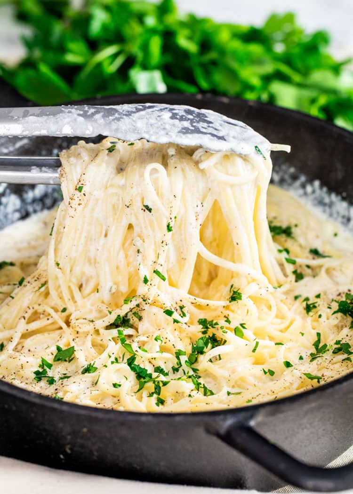

Pasta alfredo

Pasta alfredo
Delicious recipe for Pasta alfredo
Ingredients
- 8 ounce pasta
- 4 tablespoon butter
- 2 cloves garlic
- 1 1/2 cups milk
- 1 cup heavy cream
- 1/ cup parmesan cheese (shredded)
- 1/4 teaspoon salt
- 1/4 teaspoon pepper
- 2 talespoon fresh parsley (chopped)
Steps
- Melt the butter in a large skillet over medium high heat. Add the garlic and cook for 30 seconds, or until fragrant.
Pour in the milk and cream. Stir consistently to avoid burning on the bottom of the pan until the mixture comes to a boil. Turn the heat down to medium, and mix in the parmesan cheese, salt, and pepper. Adjust the seasoning to your own taste.
Remove the pan from the heat and mix in the cooked pasta until the sauce begins to thicken. Garnish with parsley, and serve.